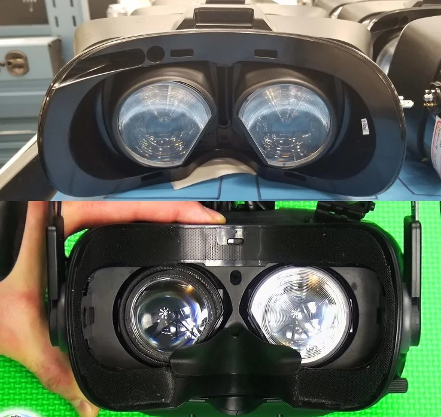

v
r
Cum funcționează VR?
Lentilele dintr-un afișaj montat pe cap (HMD) de realitate virtuală fac posibilă focalizarea asupra imaginilor produse de afișajele care sunt foarte aproape de ochii unui utilizator. Lentilele sunt plasate între ecrane și ochii privitorului, dând iluzia că imaginile sunt la o distanță unde pot fi vizualizate confortabil.
ILUZIONISM
Acești ochelari se comportă într-un mod similar cu o pereche de ochelari de protecție 3D prin faptul că afișează două imagini. Ochelarii obișnuiți arată o singură imagine, dar ochelarii 3D și de realitate virtuală conțin lentile polarizate care arată două imagini, câte una pentru fiecare ochi. Aceste imagini par să ofere o iluzie de profunzime, efectul fiind denumit stereoscopie.
Mănuși haptice pentru VR
Acești ochelari permit purtătorului să vadă imagini tridimensionale care oferă o iluzie de profunzime a percepției. De exemplu, dacă purtătorul folosește realitatea virtuală în scopuri arhitecturale, atunci acesta va putea vedea o clădire în unghiuri diferite și va putea merge prin sau în jurul ei. Multe tipuri de ochelari conțin un sistem de urmărire care face translația în mediul virtual a mișcărilor purtătorului și ajustează imaginile în consecință. De fiecare dată când purtătorul își mișcă capul, merge într-o anumită direcție sau ia o altă formă de acțiune, scena din fața lui se schimbă pe măsură ce o face.
Trackeri VR
Scopul este de a prezenta purtătorului o lume care este realistă și se comportă într-un mod similar cu lumea reală. Orice întârziere sau latență va provoca o deconectare între cele două și, în unele cazuri, senzații de rău de mișcare. Acest lucru le perturbă apoi experiența.